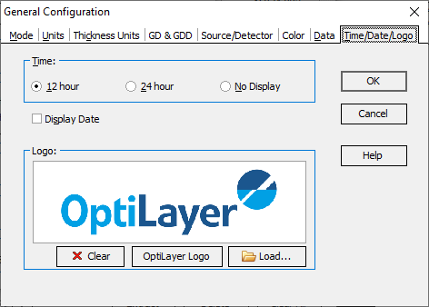

Date/Time/Logo Options
Using this configuration option, you can customize the display of date and/or time in the OptiChar main window according to your preferences.
The time display can be adjusted to show in either 12-hour or 24-hour format, or you can choose to hide it completely by selecting the No Display option.
To control the date display, simply use the Display Date checkbox to enable or disable the presentation of the date within the main window.

Using the Logo controls, you can easily customize the logo displayed on print pages. Here’s how each option works:
Clear Button: Clicking this button will remove the logo currently displayed on the print pages, leaving them blank.
OptiLayer Logo: By selecting this option, you will restore the default OptiLayer logo, which comes pre-installed with the software.
Load: This option allows you to upload and use your own company or personal logo. You can choose a file from your device, enabling you to personalize your print pages to reflect your brand identity.